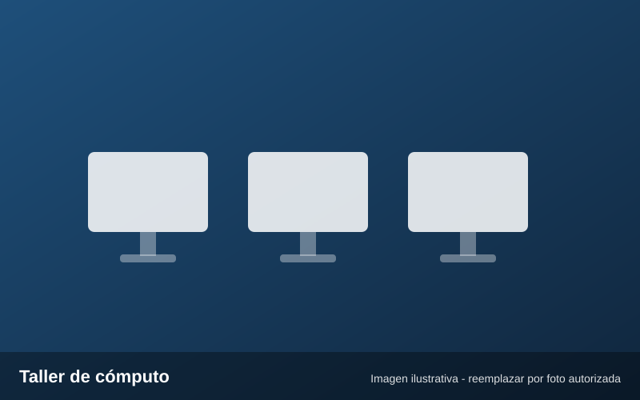
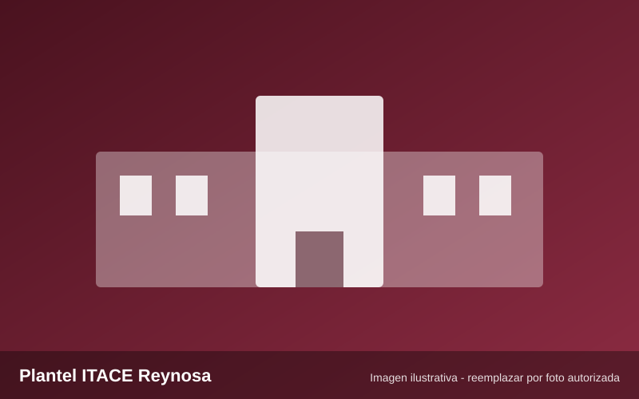
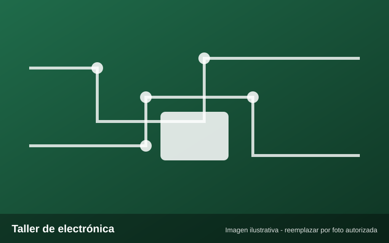
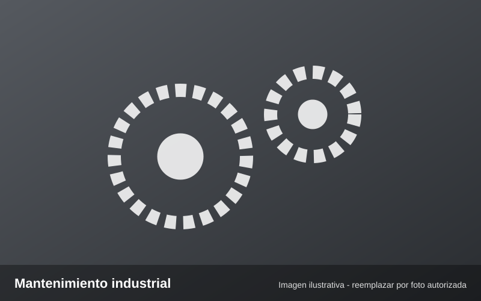

Bachillerato tecnológico · Reynosa, Tamaulipas
Instituto Tamaulipeco de Capacitación para el Empleo Plantel Reynosa
Te damos la bienvenida al portal digital del plantel. Aquí encontrarás su historia, su oferta educativa, sus docentes y la identidad que une a nuestra comunidad.

Accesos rápidos
¿Qué estás buscando?
Navega directamente a los apartados más consultados.
Conoce al ITACE
Historia, misión, visión y trayectoria del plantel.
EntrarOferta educativa
Bachillerato tecnológico y cursos de capacitación para el trabajo.
EntrarDirectorio docente
Busca profesores por nombre, materia o academia.
EntrarAdmisiones
Requisitos y pasos para inscribirte.
EntrarGalería multimedia
Fotografías por categoría y vista ampliada.
EntrarIdentidad y orgullo
Himno del ITACE e Himno a Tamaulipas.
EntrarFormación técnica
Algunas especialidades
El bachillerato tecnológico del plantel incluye, entre otras, las siguientes especialidades.

Electrónica
Bachillerato tecnológico
Mantenimiento industrial
Bachillerato tecnológicoÚltima noticia
El ITACE atendió a más de 21 mil personas en 2025-2026
Según una nota de POSTA publicada el 4 de agosto de 2026, el instituto impartió 1,300 cursos en el ciclo 2025-2026, con presencia en Altamira, Matamoros, Nuevo Laredo, Reynosa y Ciudad Victoria.
Leer más noticiasIdentidad y orgullo ITACE
Himno del ITACE · Himno a TamaulipasEscucha las interpretaciones realizadas por los estudiantes del plantel.
Ir a los himnos